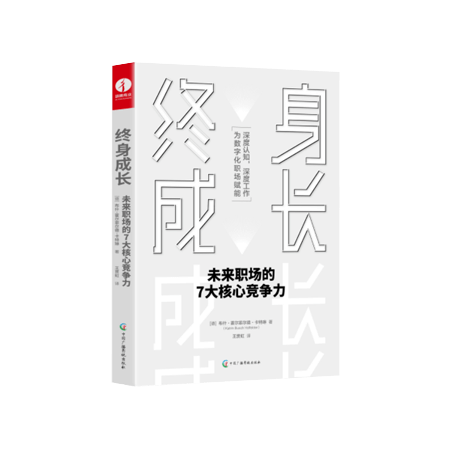
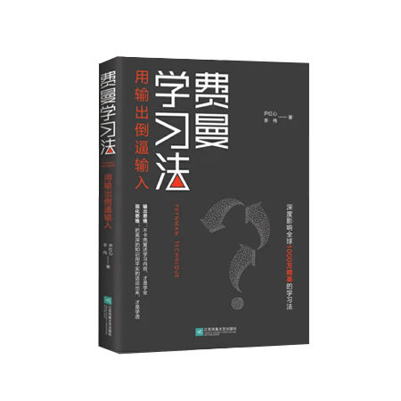
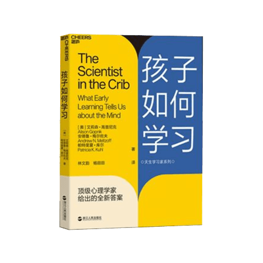
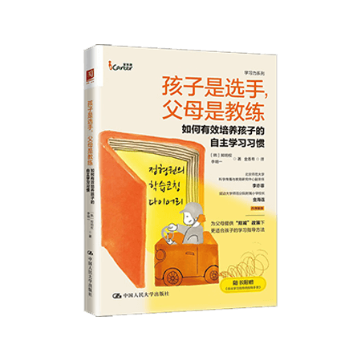
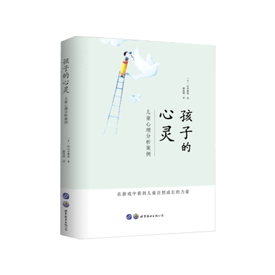
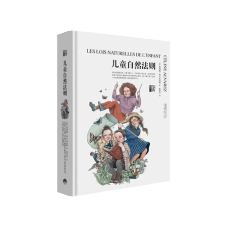

本站推荐
不管是朋友圈里年入百万的斜杠青年，还是得到、喜马拉雅上的大师专家，无一不在刺激着在积极上进的年轻灵魂。有没有一种科学高效的，符合每个人思维规律的学习方法，可以让自己瞬间提升职场竞争力和商业生存力，以此走上财务自由、精神独立的人生巅峰。在本书中，你将掌握学习领域的终极规律：
为什么说天性懒惰孕育了认知规律和心智模型 / 只需 1 次自测，一周后回忆率从 28% 跃迁为 39% / 知识是平面的，复合型知识是立体的 / 哪些 “良性干扰”能提升学习效果 / 别在无法克服的学习困难上浪费时间 / 如何打造适合自己的心智模型 / 掌握几个适合自己的记忆技巧事半功倍……本书案例丰富，论点权威，是一本不容错过的认知科普读物。
为什么说天性懒惰孕育了认知规律和心智模型 / 只需 1 次自测，一周后回忆率从 28% 跃迁为 39% / 知识是平面的，复合型知识是立体的 / 哪些 “良性干扰”能提升学习效果 / 别在无法克服的学习困难上浪费时间 / 如何打造适合自己的心智模型 / 掌握几个适合自己的记忆技巧事半功倍……本书案例丰富，论点权威，是一本不容错过的认知科普读物。

你是数字化边缘者、跟随者还是数字先 驱？你是否感受到数字化职场的洪流冲击？你是主动参与还是被动裹挟到数字经济时代？你是如鱼得得水还是深感无力？
本书作者有着资深的商业经历和职场经验，在博世、汉莎、西门子和爱立信等知名公司工作20多年，本书既是她自己学习和成长的系统总结，也是她与众多知名专家的交流成果。作者分享了在与不同个体和组织间如何应对数字商业的变化，以及培养看待数字化世界的积极视角。
这是一本帮助你深度认知、深度工作，为数字化职场赋能的书，帮助锻造数字职场进化力。作者从成长心态、终身学习、自我调节、数字化能力、新型职场、创造力、减速与平衡7个方面帮助读者自我调整和提升。
本书作者有着资深的商业经历和职场经验，在博世、汉莎、西门子和爱立信等知名公司工作20多年，本书既是她自己学习和成长的系统总结，也是她与众多知名专家的交流成果。作者分享了在与不同个体和组织间如何应对数字商业的变化，以及培养看待数字化世界的积极视角。
这是一本帮助你深度认知、深度工作，为数字化职场赋能的书，帮助锻造数字职场进化力。作者从成长心态、终身学习、自我调节、数字化能力、新型职场、创造力、减速与平衡7个方面帮助读者自我调整和提升。

享誉全球的诺贝尔奖得主、天才物理学家、纳米技术之父、量子电动力学的创始人费曼，除精通多门语言外，在音乐方面的造诣也颇深。之所以能在众多领域取得举世瞩目的伟大成就，是因为他有一套独特的学习法，是当之无愧的学习大师。 费曼学习法的核心，是把复杂的知识简单化，以教代学，让输出倒逼输入。它对输出思维极其推崇，认为输出就是zui强大的学习力，能不卡壳复述学习内容，才是学全；它对简化思维格外重视，强调找出问题的要害，把复杂的知识简单化，认为把高深的知识用平实的话说出来，才是学透。这不只是一种学习方法，更是一种思维方式。

人们一向认为，孩子的学习是被动的，是需要被教的。但科学证明，学习是孩子与生俱来的本能，世界上再先进的电脑算法，也比不上孩子大脑的运行方式。
在《孩子如何学习》中，3位世界知名儿童发展专家，首度揭示了孩子学习的奥秘，用丰富而具有创造性的实验，将孩子超越成人的学习天赋细致入微地展现在你面前，从理解他人、认知事物和学习语言3个方面详细阐释了孩子大脑的学习机制，并分析了背后的原因。不仅让我们知道孩子到底是怎么学的，还告诉我们孩子究竟是如何做到的。
在《孩子如何学习》中，3位世界知名儿童发展专家，首度揭示了孩子学习的奥秘，用丰富而具有创造性的实验，将孩子超越成人的学习天赋细致入微地展现在你面前，从理解他人、认知事物和学习语言3个方面详细阐释了孩子大脑的学习机制，并分析了背后的原因。不仅让我们知道孩子到底是怎么学的，还告诉我们孩子究竟是如何做到的。
一个小婴儿着迷似地深情凝视母亲的脸庞，可能奠定了人类爱与道德的基础；全心投入地玩着假装游戏的孩子可能解释了我们如何想象未来，甚至是如何写出一本书，如何发明日新月异的科技……童年是人生至关重要的成长阶段，但我们对那个阶段所知的实在太少了，而许多时候甚至忽视了它。
在《孩子如何思考》中，国际儿童学习研究泰斗艾莉森•高普尼克将近30年来儿童发展研究领域的革命性发现展示给大家，不仅揭示了孩子意识与思维的独特之处，更融入自己作为哲学家的洞见，深刻剖析了童年生活对一个人的一生，以及童年对于整个人类的重大影响，给我们提供一个完整的、充满情感与智慧的视角，从一种崭新的角度去欣赏童年的丰富性与重要性。
在《孩子如何思考》中，国际儿童学习研究泰斗艾莉森•高普尼克将近30年来儿童发展研究领域的革命性发现展示给大家，不仅揭示了孩子意识与思维的独特之处，更融入自己作为哲学家的洞见，深刻剖析了童年生活对一个人的一生，以及童年对于整个人类的重大影响，给我们提供一个完整的、充满情感与智慧的视角，从一种崭新的角度去欣赏童年的丰富性与重要性。

在一个终身学习的时代，养成自主学习的习惯，提升自主学习能力将是确保未来竞争力的核心要素。本书从教育学、心理学、指导心理学等领域的理论出发，结合大量实际指导案例，提出了自主学习指导师这一新的概念，告诉读者只要方法得当，每位家长都能帮助孩子找到好的适合孩子的学习方法，养成良好的学习习惯，进而爱上学习。另外，无论环境如何变化，越来越凸显从小培养自主学习能力的重要性。作者认为，每位家长都能够成为合格的自主学习指导师，进而培养好自己的孩子，也可以向周边更多人服务。

《孩子的心灵：儿童心理分析案例》是一本儿童心理学方面的高端科普图书，详细记载了作者对9个孩子的心理分析及治疗过程，对教师、家长极具启发意义。
本书是京都大学教授山中康裕的早期作品，作为日本分析心理学与沙盘游戏治疗的开拓者之一，作者有非常丰富的理论与实践经验，他在书中为读者展现了一种真正的对待儿童来访者的态度。通过与儿童面对面、心与心的亲切交流，治疗师最终让我们看到了儿童自然成长的力量。而治疗师本人，在为儿童提供一个自由并受到保护的空间的同时，默默地陪伴他们，通过凝视孩子的目光，密切留意他们的表情，随时确认他们传递出的信息，从孩子各自特殊的“窗口”中探视他们的心灵深处，及时把握住了心理干预的时机。
本书是京都大学教授山中康裕的早期作品，作为日本分析心理学与沙盘游戏治疗的开拓者之一，作者有非常丰富的理论与实践经验，他在书中为读者展现了一种真正的对待儿童来访者的态度。通过与儿童面对面、心与心的亲切交流，治疗师最终让我们看到了儿童自然成长的力量。而治疗师本人，在为儿童提供一个自由并受到保护的空间的同时，默默地陪伴他们，通过凝视孩子的目光，密切留意他们的表情，随时确认他们传递出的信息，从孩子各自特殊的“窗口”中探视他们的心灵深处，及时把握住了心理干预的时机。

儿童一出生就拥有学习和爱的能力。神经科学的研究向我们展现了儿童不可思议的大脑潜能，每一天孩子都能够从周围世界中汲取有助于智力发展的养分。然而，由于成年人对这些知识缺乏了解，强加给儿童违背他们幼小大脑发展规则的教育系统，反而阻碍了孩子们天生具有的学习能力和爱心的发展。
这本讲述重要教育理念的书，揭示了看待孩子的一种新的方式，以及在家庭和学校培育孩子的一种新方法。作者用简单清晰的语言解释了神经科学中的重要知识点，并结合自己的实验，接受有助于发展孩子自身潜力的实际操作法，和成年人在儿童教育中应该保持的姿态。
这本讲述重要教育理念的书，揭示了看待孩子的一种新的方式，以及在家庭和学校培育孩子的一种新方法。作者用简单清晰的语言解释了神经科学中的重要知识点，并结合自己的实验，接受有助于发展孩子自身潜力的实际操作法，和成年人在儿童教育中应该保持的姿态。